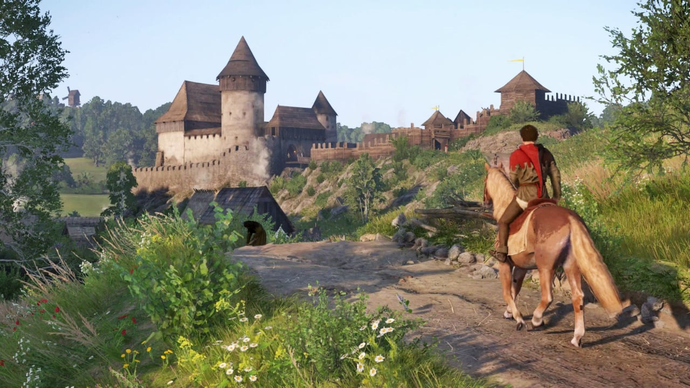
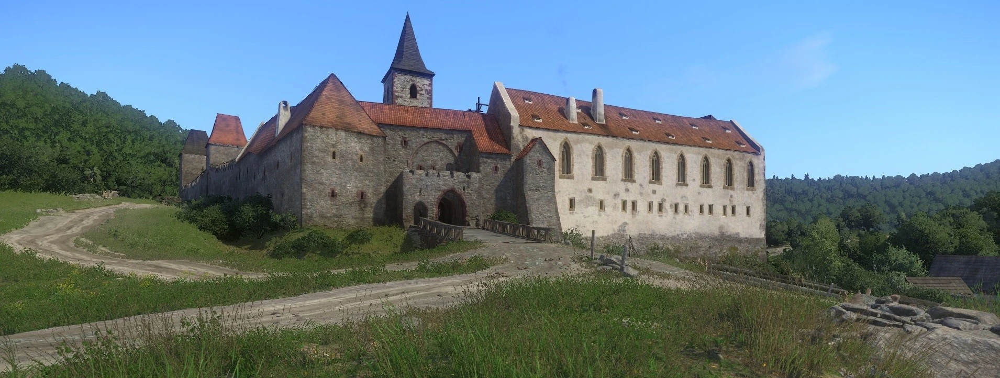

My name is Min Ye!
I am currently a fourth-year student at DigiPen Singapore, pursuing a BS in Computer Science in Interactive Media and Game Development degree. Though I was formerly studying accountancy in polytechnic,
I realized that I was not at all interested in the business, and decided to start a career in the field that I love - video games. Thus, after graduating from polytechnic, I took the risk and jumped to
a game developement course despite not knowing a single thing about computer science or programming. I can now confidently say that I have no regrets because I am enjoying programming and making games.
Do keep an eye on my game projects page as I will continue to upload new games from time to time. Hope you have fun trying them out!!!
Keep scrolling for some trivia about me, we may have some interests in common!

Fire Emblem: The Blazing Blade, or FE7, was probably one of the first few games I have ever played in my life, aside from Pokemon.
When a friend in primary school lent it to me, I got absolutely hooked onto this more-punishing-than-my-mother strategy turn-based game.

Being the silly kid that I was, I took ages to beat the game because I refused to let even a single character die. To me, permadeath didn't
mean losing a character forever, it meant hard resetting and doing the level all over again. Having the entire ensemble make it through chapter
by chapter just gave me a warm fuzzy feeling that was simply comforting.

Another reason why I love this game so much was the art style. I found the pixelised sprites and combat animations really appealing and I think
it still looks great, even by today's standards. You know it's good when you don't skip the combat animation even after seeing it a million times.
Also the character recuitment soundtrack was bomb.

FE7 was a core part of my childhood and I still go back to play it from time to time, together with Sacred Stones. FE7 came with a compelling story,
intimate characters, simple yet potentially chaotic combat mechanics, and great art & music. Perhaps it's just nostalgia, but this game had a charm
that the modern Fire Emblem games just could not emulate.

As someone who grew up immersed in Asian culture, I've never really thought about European or Medieval history much. That was probably why I was so captivated
by detailed recreation of medieval Bohemia in KCD, because it was so beautiful and completely new to me.

I was particularly fond of the main cast of characters in the game. It's rare for me to become so invested in video game characters, but
in KCD, they felt so real. Each of them were unique and had their own endearing personality and their own struggles. It became difficult
to not root for Henry as he went looking for vengeance. Theresa was just as inspiring in her journey to seek safety after her hometown
was destroyed.

KCD also featured a sword-fighting mechanic that I adored. As clunky as it was, being able to repeatedly swing my mace into the enemy
from different directions was really fun. Although, one gripe I had was that combos become obsolete once Henry learns the Master
Strike, which is essentially a counter attack. Master Strikes are powerful because enemies cannot counter them, unlike normal attacks.
But this resulted in constantly waiting for enemies to swing at me so I can counter their attack, which in turn led to drawn-out fights.
Still fun though!

Above all, I think what set KCD apart from other games in the same genre is the replication of historically accurate places in the game.
It was as if I was participating in a fun and immersive history class. It was genuinely interesting to experience the village architecture,
food, weapoons, and clothing from a different time and region. KCD sparked in me an interest in medieval Europe and I hope to be able to
travel see the Sazava Monastery one day, which the Sasau Monastery in the game was based on.

Sasau Monastery in Kingdom Come: Deliverance
Sazasa Monastery near Prague. Credits to u/dajauhlir on Reddit.

A 2D narrative puzzle game that tells the story of a red blood cell's quest to fix the human body.
Role: Technical Lead